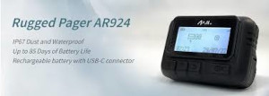

O que é pager?
Os pagers são dispositivos de comunicação portáteis e sem fio capazes de receber mensagens de texto e/ou de voz por sinais de rádio. Quando uma nova mensagem chega, o dispositivo emite um alerta sonoro ou vibra, notificando o usuário que a mensagem está disponível no visor.
Entre os anos 1980 e 1990, os pagers ganharam destaque, especialmente entre profissionais que precisavam de comunicação rápida e eficiente, como médicos e profissionais de emergência. Embora a tecnologia dos celulares tenha avançado, em algumas regiões com baixa cobertura celular, os pagers ainda são utilizados.
Por Que Membros do Hezbollah Usam o Pager?
Os membros seniores do Hezbollah começaram a usar pagers por serem considerados menos vulneráveis em termos de segurança da informação. Ao contrário dos celulares, que possuem câmeras, microfones e dependem de chips, os pagers não têm esses componentes, tornando-os menos suscetíveis à espionagem.
Desde os ataques de 7 de outubro, quando o líder do grupo alertou sobre a infiltração israelense na rede de celulares, o uso de pagers se tornou mais difundido. A agência Reuters noticiou em julho que o partido intensificou o uso desses dispositivos como forma de comunicação segura no campo de batalha, evitando assim o monitoramento por parte de Israel.
Como Os Pagers Explodiram?
Os vídeos online sugerem que dispositivos explosivos foram integrados aos pagers. N.R. Jenzen-Jones, diretor da Armament Research Services, acredita que a escala do ataque indica uma complexa manipulação na cadeia de suprimentos. Sean Moorhouse, especialista em descarte de munições explosivas, comentou que uma pequena carga explosiva, comparável em tamanho a uma borracha de lápis, foi inserida nos pagers antes da entrega.

Elijah J. Magnier, analista sênior de risco político, relatou que membros do Hezbollah examinaram pagers que não explodiram. Segundo ele, as explosões foram desencadeadas por uma mensagem de erro que fez os dispositivos vibrarem, levando os usuários a pressionar os botões para interromper a vibração. Este acionamento detonou os explosivos, garantindo que os usuários estivessem presentes durante a explosão.
Qual é a Resposta Internacional?
A comunidade internacional tem acompanhado de perto os desdobramentos desse ataque. O Líbano e a Síria, que abrigam atividades do Hezbollah, estão no centro das atenções. O uso de dispositivos de comunicação como os pagers voltados para fins militares levanta questões sobre a segurança e a privacidade em tempos de conflito.
A China, fabricante do modelo Rugged Pager AR-924 utilizado pelo grupo, negou qualquer envolvimento com as explosões. Países da ONU estão pressionando por uma investigação completa para determinar os responsáveis e evitar futuras tragédias.
Em resumo, o incidente com os pagers ilustra as complexidades da guerra moderna, onde até dispositivos de comunicação aparentemente inofensivos podem se tornar armas letais. A segurança da informação continua sendo uma preocupação crítica para todos os envolvidos.